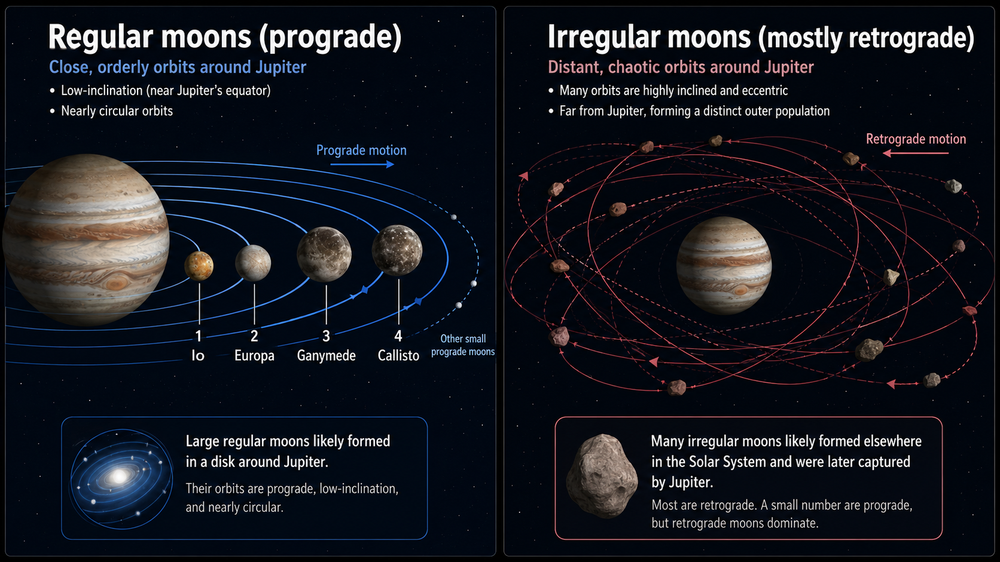
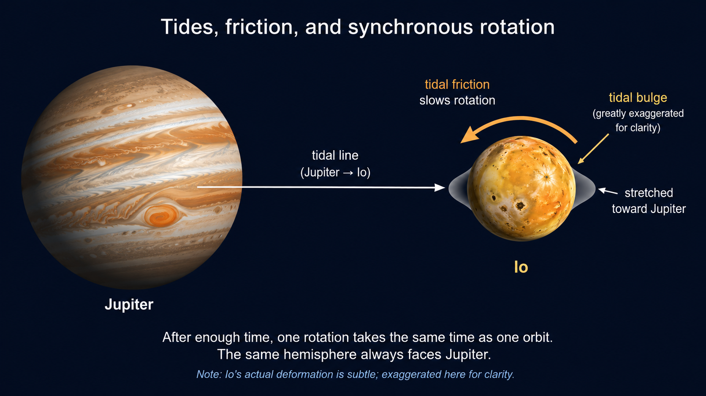
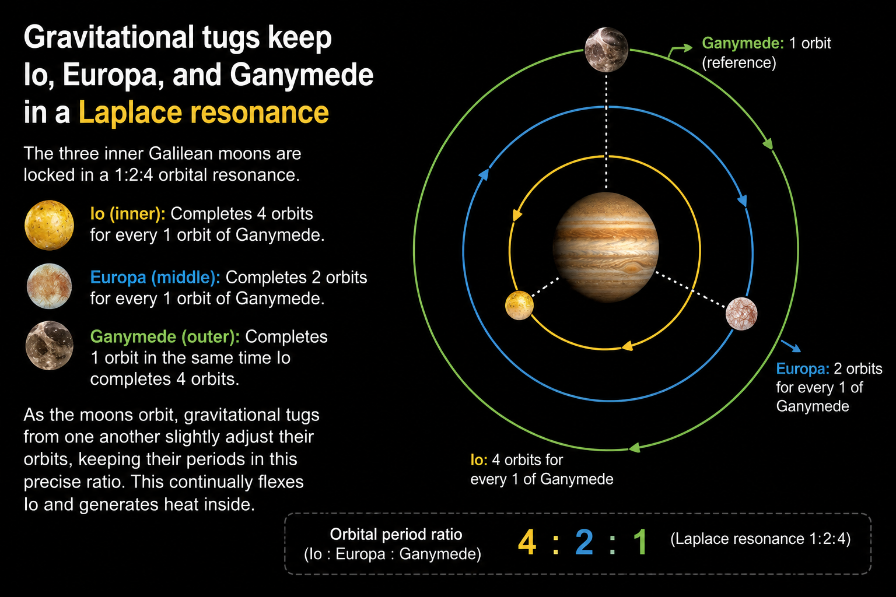
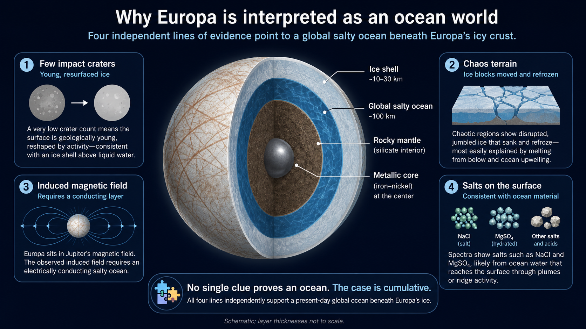
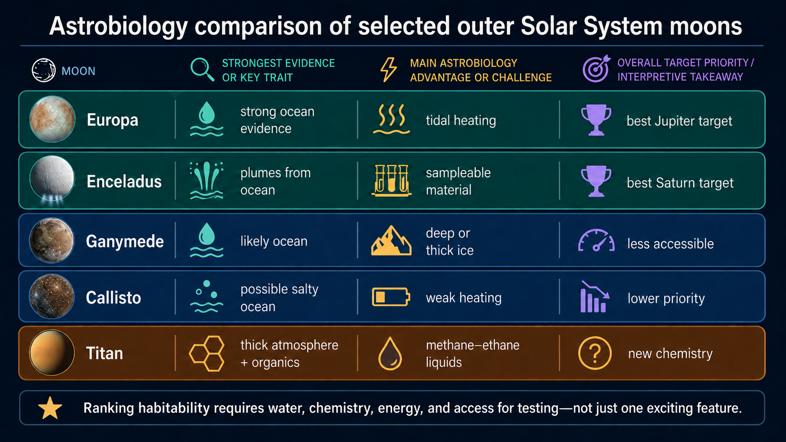

8. Life on Jovian Moons#
Jun 06, 2026 | 13618 words | 68 min read
How to use this chapter
This chapter shifts the search for life away from planetary surfaces and toward the hidden interiors of icy moons. As you read, focus on three questions: why the outer Solar System has so many large moons, how tidal heating can keep small worlds geologically active, and why a world can be habitable even when its surface is frozen, dark, and hostile.
This hidden-habitability idea should feel different from the earlier Mars chapter. Mars is important because it preserves evidence that surface environments were once warmer and wetter. In that case, the search for life is partly a search backward through time: ancient lake beds, river deltas, minerals formed in water, and rocks that might preserve traces of past environments. The outer icy moons are different. Their surfaces may be ancient, cold, and unlivable, but some of their interiors may be active today. The evidence is therefore often indirect. We look at cracked ice, crater counts, magnetic-field responses, gravity measurements, plume particles, and chemical traces, then ask what interior structure could produce all of those observations together.
That style of reasoning is central to science. No one has drilled through Europa’s ice. No one has piloted a submarine through the ocean of Enceladus. No one has watched methane-based life crawl across Titan. The scientific case is built by connecting several independent pieces of evidence and asking whether they point toward the same explanation. A young icy surface suggests resurfacing. Resurfacing suggests movement or melting. A magnetic response suggests a conducting layer. A conducting layer beneath ice is naturally explained by salty liquid water. Plumes suggest material escaping from an interior reservoir. Organic molecules suggest complex chemistry, but not necessarily life. Each clue has limits, and each clue can be overinterpreted if isolated from the others. The strongest cases come from evidence chains.
The chapter also gives us a useful warning about the word ocean. On Earth, an ocean means a sunlit surface ocean with waves, weather, photosynthesis near the top, and food webs extending downward. On Europa or Ganymede, an ocean may be buried beneath tens to more than a hundred kilometers of ice. On Enceladus, the ocean may be global or concentrated in ways still being studied, but plume activity proves that at least some interior material reaches space. On Titan, liquid exists on the surface, but it is mostly methane and ethane, while water is frozen into rock-hard ice. Calling all of these worlds ocean worlds can be useful, but only if we immediately ask what kind of ocean, what kind of chemistry, what kind of energy, and what kind of access.
This is where earlier course themes return. Chapter 1 introduced the difference between imagining life and searching scientifically for it. Chapter 4 showed that geology, internal heat, and long-term cycling matter for keeping a planet habitable. Chapter 5 framed life in terms of structure, heredity, metabolism, and energy use. Chapter 6 emphasized that microbial life dominated most of Earth history. The Jovian moons bring those ideas together. If life exists elsewhere in the Solar System, it may not look like plants or animals on a bright surface. It may be microbial, hidden, sparse, and powered by chemistry in the dark. Earth taught us that liquid water, chemical building blocks, and usable energy matter for life. Mars taught us that a world can once be habitable and later become much less so. The outer Solar System adds a third possibility: a world can look frozen and lifeless on the outside while hiding liquid water beneath an icy crust. That possibility changes the way we search for life because the most interesting places may not be planetary surfaces at all. They may be moons.
The word Jovian originally refers to Jupiter, but in astronomy we often use it more broadly for the giant planets and their systems of moons. Jupiter, Saturn, Uranus, and Neptune are not just isolated planets. They are centers of smaller systems, with rings, magnetospheres, regular moons, irregular captured moons, and, in some cases, moons large enough to be worlds in their own right. Several of those moons are larger than familiar planets or dwarf planets. Ganymede and Titan are both larger than Mercury. Europa and Callisto are larger than Pluto. Io is roughly the size of Earth’s Moon. These are not tiny rocks orbiting big planets as an afterthought. They are planetary worlds that happen to orbit planets instead of the Sun.
The astrobiological importance of the outer moons comes from a surprising source: heat. Sunlight is weak far from the Sun, so we do not expect warm surface oceans there. Yet a moon can have heat from its formation, from radioactive decay, or from tides raised by its giant planet and neighboring moons. If that heat is trapped below an icy shell, it can keep a subsurface ocean liquid for billions of years. In that setting, the familiar surface-habitability question from earlier chapters becomes less useful. We are no longer only asking whether a planet has a pleasant surface temperature. We are asking whether an ocean hidden inside an icy body can exchange materials, maintain chemical disequilibrium, and provide energy for metabolism.
That is why Europa and Enceladus are among the most important worlds in astrobiology. They are not Earthlike in the usual sense. They are not warm, blue, breathable places. Europa is embedded in Jupiter’s intense radiation environment, and Enceladus is a small icy moon of Saturn. Yet both may have the ingredients needed for simple life. Titan, meanwhile, pushes the question even further. It has a thick atmosphere, lakes and seas on its surface, and organic chemistry everywhere, but its surface liquids are methane and ethane rather than water. Titan may be less promising for life as we know it, but it is one of the best natural laboratories for thinking carefully about how much our expectations depend on Earth.
This chapter therefore has two main jobs. First, it explains the physical processes that make large icy moons active: moon formation, synchronous rotation, tidal heating, and orbital resonance. Second, it applies the habitability framework from earlier chapters to Europa, Ganymede, Callisto, Titan, Enceladus, and a few more distant candidates. Keep the distinction between habitable and inhabited in mind. A habitable environment is one where life could survive or perhaps arise. It is not evidence that life is present. So far, Earth remains the only confirmed inhabited world.
8.1. The Moons of the Outer Solar System#
8.1.1. Galileo’s discovery and the meaning of a moon system#
The modern story of the Jovian moons begins with a technological jump. In the early seventeenth century, Galileo Galilei heard reports that Dutch instrument makers had built a device that could make distant objects appear closer, a spyglass. He did not receive a finished telescope. He received enough information about the arrangement of lenses to build his own version, and then he improved it. When he turned that instrument toward the sky in 1610, Jupiter was one of his most important targets.
At first, Galileo saw what looked like three small stars lined up near Jupiter. That by itself was not strange. The sky is full of stars. The strange part came from watching them over several nights. Their positions changed, but they remained close to Jupiter. Soon a fourth small point appeared. Galileo realized that these were not background stars. They were bodies orbiting Jupiter. In his own political context, he called them the Medician stars to honor the powerful Medici family. The names used today, Io, Europa, Ganymede, and Callisto, came from Simon Marius, who observed the moons around the same time and proposed names drawn from mythology.
This discovery mattered far beyond the moons themselves. In the geocentric picture discussed in Chapter 2, Earth was treated as the center around which the heavens moved. Jupiter with its own orbiting bodies did not fit that simple picture. The Galilean moons showed that a planet could be the center of a smaller system while still belonging to a larger system. That did not prove the Copernican model by itself, but it weakened the idea that every object in the sky must orbit Earth. It also gave students of nature a concrete example of nested systems: moons orbit planets, planets orbit stars, and stars belong to galaxies.
The same lesson matters in astrobiology. A planet is not the only kind of world that can be interesting. If a moon is large enough, internally active enough, or chemically rich enough, it can be a candidate habitat. That means our search for life in the Solar System cannot stop with the planets. It has to include the smaller worlds that orbit them.

Fig. 8.1 The four Galilean moons are shown from left to right in order of increasing distance from Jupiter: Io, Europa, Ganymede, and Callisto. The comparison is useful because the moons are not just different sizes; they are different worlds. Io’s surface records intense tidal heating and volcanism, Europa’s bright icy surface points toward an outer water-rich layer, Ganymede shows tectonic resurfacing across a large differentiated moon, and Callisto’s heavily cratered surface preserves an older, less active history. Source: NASA/JPL, PIA01299, The Galilean Satellites. Image credit: NASA/JPL/DLR; NASA media.#
Galileo’s discovery also introduces a recurring theme of this course: better instruments do not merely add more facts to an old picture. They can change the picture. With the naked eye, the Galilean moons were invisible. With a small telescope, they became evidence that the architecture of the Solar System was more complex than everyday experience suggested. In the same way, modern spacecraft and telescopes have turned the outer moons from distant points of light into geologically diverse worlds.
Use this short Geo Girl video as a quick orientation to the four Galilean moons. The point is not to memorize every fact in the song, but to hear the four names repeatedly and connect each moon with a first-order identity: Io is volcanic, Europa is icy and ocean-bearing, Ganymede is enormous, and Callisto is ancient and cratered.
There is another subtle lesson in Galileo’s discovery. The moons were not interesting because they were bright or spectacular in the eyepiece. They were interesting because their motion over time revealed their relationship to Jupiter. A single observation could have been dismissed as a chance alignment of background stars. The repeated pattern made the interpretation stronger. This is the same habit of mind you should bring to the rest of the chapter. A single image of Europa’s surface does not prove an ocean. A single crater count does not prove active geology. A single detection of an organic molecule does not prove life. The scientific strength comes from repeated observations and from different kinds of observations supporting the same physical story.
The Galilean system is also useful because the four moons form a natural comparison set. Io, Europa, Ganymede, and Callisto orbit the same planet and formed in broadly the same neighborhood, yet they are dramatically different. Io is volcanic and nearly dry. Europa is icy with a likely ocean. Ganymede is enormous and magnetically active. Callisto is old, cratered, and only partly differentiated. Comparing them is like comparing the terrestrial planets in miniature. Differences in distance, composition, heating, and history produce different worlds.
Checkpoint
Why did Galileo’s observation of moons orbiting Jupiter weaken the idea that every heavenly body must orbit Earth?
The key move is not to treat Jupiter’s moons as trivia. They are an example of how scientific evidence can change what questions become reasonable. Once a planet can host its own system, it becomes easier to ask whether some moons might also host environments suitable for life.
8.1.2. Regular moons, irregular moons, and captured worlds#
The giant planets have many moons, but not all moons are alike. Some are large, nearly spherical worlds on orderly orbits. Others are small, irregularly shaped bodies moving on tilted or elongated paths. This difference is not just a cataloging detail. It tells us something about how the moons formed.
Large and moderate-sized moons around the giant planets tend to orbit close to the equatorial plane of their host planet, in the same direction that the planet rotates. That pattern resembles the layout of the planets around the Sun. It suggests that many large regular moons formed in disks of gas and solids surrounding young giant planets, much as planets formed in the disk around the young Sun. For that reason, Jupiter’s regular moons are often described as a miniature Solar System. The comparison is not perfect, but it is useful. It reminds us that planet formation and moon formation can be related disk-building processes operating on different scales.
Astronomers now have observational support for this idea beyond our own Solar System. ALMA observations of the young planetary system PDS 70 revealed a disk around the young giant planet PDS 70c. That disk is interpreted as a circumplanetary, or moon-forming, disk. We do not see finished moons there, but we do see the kind of material reservoir from which moons can grow. This matters because it connects the Galilean moons to a broader planet-formation context: moon systems may be a natural outcome of giant planet formation, not a one-time accident unique to Jupiter.

Fig. 8.2 ALMA observations of PDS 70c show a young giant planet with its own circumplanetary disk, a plausible setting for moon formation. This image is not a picture of the Galilean moons forming, but it is a modern observational analog for the kind of disk that may form regular moon systems. Source: ESO image eso2111a. Image credit: ALMA (ESO/NAOJ/NRAO)/Benisty et al.; ESO media.#
Small moons tell a different story. Their gravity is weak, so they are often irregular in shape. Some look like potatoes, peanuts, or other lumpy objects because their own self-gravity is not strong enough to pull rigid material into a sphere. Their orbits can also be strange. Many small moons orbit in groups, which may mean they are fragments of larger bodies that broke apart. Others have highly elliptical or highly inclined orbits. Some orbit backward relative to the planet’s rotation; this is called retrograde motion. Those moons probably did not form calmly in the planet’s original disk. They were likely captured from elsewhere.
Captured moons are especially useful because they preserve evidence of Solar System mixing. A captured moon might once have been an asteroid, a comet, or a Kuiper Belt object. Neptune’s large moon Triton is the most dramatic example in this chapter. Triton is slightly larger than Pluto, follows a retrograde orbit, and is widely interpreted as a captured Kuiper Belt object. Its existence reminds us that a moon’s present location is not always its birthplace.

Fig. 8.3 Regular moons and irregular moons record different histories. In the left panel, the large regular moons stay close to Jupiter on low-inclination, nearly circular, prograde orbits, which points to formation in a disk around the young planet. In the right panel, the irregular moons occupy much more distant, inclined, eccentric orbits; many are retrograde and asteroidlike, which suggests they formed elsewhere in the Solar System before being captured or later broken apart. Image credit: Instructor-created course media.#
OSIRIS-REx Mission / 321Science
This short video explains the difference between prograde and retrograde motion. Use it to focus on direction: a prograde moon orbits in the same general direction as the planet rotates, while a retrograde moon orbits the opposite way. That distinction helps prepare the comparison below, where many irregular moons are shown as captured bodies on distant, inclined, eccentric, or retrograde paths.
The number of known moons also keeps changing because many of the newly discovered objects are small and faint. The exact count is not conceptually important, but it is a useful reminder that discovery is ongoing. The slide deck noted Saturn with more than 270 known moons and Jupiter with about 90. The current confirmed counts are even higher: the International Astronomical Union reported in March 2026 that Saturn had 285 known moons and Jupiter had 101. Those numbers will probably change again. For this chapter, the important point is that the giant planets are not lonely worlds. They are centers of crowded satellite systems. Naming conventions preserve some of that history too: many moons of Jupiter, Saturn, and Neptune draw from mythology, while Uranus is the odd case whose moons follow a Shakespearean and literary convention.
The figure below broadens the view from Jupiter alone to the outer Solar System as a whole. The important point is not that every moon deserves equal attention. It is that the giant planets host systems of moons, not isolated companions. Jupiter has the four large Galilean moons plus many smaller distant moons. Saturn has Titan, several mid-sized icy moons, small moons connected to its rings, and many captured outer moons. Uranus and Neptune also have moon systems, although they have been explored much less thoroughly. Seeing these moons side by side helps explain why astrobiologists ask what kind of moon they are studying: large or small, regular or irregular, icy or rocky, geologically active or geologically quiet.
Fig. 8.4 Selected moons of the outer Solar System show that the giant planets host diverse moon systems rather than single isolated moons. The largest moons, such as Ganymede, Callisto, Titan, and Triton, are round worlds shaped by gravity and internal evolution. Smaller moons, such as Hyperion and Phoebe, help illustrate a different population of irregular or captured objects. This comparison places Europa, Ganymede, Callisto, Titan, and Enceladus into a broader family of icy outer Solar System satellites. Source: OpenStax Astronomy 2e, Figure 12.2, Moons of the Solar System. Image credit: OpenStax, modification of work by NASA; OpenStax open educational resource.#
The regular moon pattern also helps explain why the Galilean moons change systematically with distance from Jupiter. The inner region of a circumplanetary disk was hotter, so volatile materials such as water ice were less likely to remain abundant close to Jupiter. Io formed in the hottest part of the disk and ended up mostly rocky. Europa formed farther out and retained more water. Ganymede and Callisto formed farther still and retained even more ice. This kind of radial trend is familiar from the Solar System as a whole: the inner planets are rocky, while the outer region contains much more ice and gas. Again, the moon system acts like a smaller-scale version of planet formation.
However, miniature Solar System does not mean exact copy. Jupiter is not a star, and its disk was not simply a scaled-down version of the solar nebula. The disk around a young giant planet would have been fed by material still falling in from the surrounding protoplanetary disk. It would have had its own temperature structure, gas drag, migration, and loss processes. Some moons may have formed and spiraled inward before the final surviving moons remained. The phrase miniature Solar System is therefore a useful teaching analogy, not a complete model. It helps you see why regular moons share orderly orbital properties, but it should not be treated as proof that moon formation is just planet formation repeated unchanged.
Irregular moons add another layer of history. A captured object has to lose enough orbital energy to become bound to a planet. That is not easy for a lone object passing by a planet today, but it was more plausible when the early Solar System contained gas, many small bodies, and frequent gravitational encounters. A group of irregular moons with related orbits may represent fragments of a larger captured body that later broke apart. Their existence tells us that the giant planets continued to rearrange small bodies after the main planets and regular moons formed.
This matters for astrobiology because delivery and mixing are part of habitability. Organic-rich material from comets and primitive asteroids may have been delivered to icy moons by impacts. Radiation can process surface ice into oxidants or other reactive molecules. Captured bodies and impact fragments can carry information about where materials came from. The outer moon systems are therefore not closed boxes. They have been shaped by formation, migration, impacts, radiation, and exchange of material over billions of years.
Checkpoint
How can a moon’s orbit help distinguish a moon that formed in a circumplanetary disk from a moon that was probably captured later?
This distinction matters for habitability because formation history affects composition. A regular moon that formed in a disk around a giant planet may inherit a predictable mixture of rock and ice based on where it formed. A captured object may bring a different composition from a different part of the Solar System. In both cases, the present moon is a record of the early Solar System and a possible habitat shaped by later heating, cooling, and collisions.
8.1.3. Ice, rock, density, and synchronous rotation#
Most large outer Solar System moons are mixtures of ice and rock. That one sentence explains a great deal. Ice is less dense than rock, so icy moons tend to have lower average densities than the terrestrial planets. Among the Galilean moons, density decreases with distance from Jupiter. Io, the innermost, is the densest and contains very little water. Europa is still mostly rock, but it has an icy outer layer and probably a global ocean beneath that ice. Ganymede and Callisto contain more water ice mixed with rock, and both may have subsurface liquid water layers. Farther out, some moons of Saturn and Neptune contain methane, ammonia, and other volatile ices that would not survive as easily closer to the Sun.
This composition pattern is not random. Temperature in the early Solar System controlled which materials could remain solid. Close to the Sun, water and other volatile compounds were harder to keep. Farther from the Sun, ices were abundant building materials. The giant planet region therefore produced moons that are not merely rocky bodies with a dusting of ice. Many are ice-rich worlds. That matters for astrobiology because water ice can act as a long-term reservoir. If enough internal heat is present, some of that ice can melt into liquid water below the surface.
The same moons also tend to be synchronous rotators. A synchronous moon rotates once in the same time it takes to complete one orbit, so the same side always faces the host planet. Earth’s Moon does this, which is why we see essentially the same lunar near side from Earth. Nearly all large Jovian moons are synchronous for the same basic reason: tides.
A tide is produced by a difference in gravity across an object. The side of a moon facing the planet feels a stronger gravitational pull than the far side. That difference stretches the moon slightly. If the moon rotates faster than its orbital motion, the tidal bulge does not stay perfectly aligned with the planet. Friction inside the moon resists the distortion. Over time, that friction slows the rotation until the bulge stays aligned and the same hemisphere faces the planet. Once this state is reached, it is stable. The moon is tidally locked.

Fig. 8.5 Tidal locking is a consequence of differential gravity and internal friction. The host planet stretches the moon, friction dissipates rotational energy, and the moon eventually settles into a state where one rotation takes the same time as one orbit. Image credit: Instructor-created course media.#
Tidal locking itself does not make a moon habitable. It is important because it signals a deeper relationship between moons and their host planets. The same differential gravity that locks a moon’s rotation can also flex the moon’s interior. If that flexing changes with time, it can generate heat. Heat is the bridge from orbital dynamics to habitability.
Density is one of the simplest measurements we can use to make a first guess about composition. A rocky world like Earth is much denser than a water-rich icy world. If a moon has a low average density, it cannot be made entirely of metal and rock. It must include lower-density material, usually water ice and other ices. This does not tell us the exact interior structure by itself, but it narrows the possibilities. When density is combined with gravity measurements, magnetic-field measurements, surface geology, and thermal models, scientists can infer whether a moon is differentiated into layers or mixed throughout.
Differentiation is especially important. If a moon became warm enough early in its history, denser rock and metal could sink while lighter ice and water rose. A differentiated moon can have a rocky mantle in contact with water, which is potentially important for chemistry. Water-rock interaction can create chemical gradients and release compounds that microbes on Earth can use. A moon that never fully differentiated may still contain water, but the water may be mixed with ice and rock in ways that limit long-term chemical exchange. This is one reason Europa tends to look more promising than Callisto.
Synchronous rotation is sometimes misunderstood as a moon simply not rotating. It does rotate. It rotates exactly once per orbit. Imagine walking around a table while always facing a friend at the center. From your own point of view, you have turned once by the time you complete the circle, even though your face stayed pointed toward the center. That is what a synchronous moon does. The same hemisphere faces the planet because the spin rate and orbital rate are locked together.
The astrobiological significance of tidal locking depends on whether the tidal distortion changes. A perfectly circular orbit with a perfectly steady bulge would dissipate little energy after locking. Heating becomes important when the moon’s orbit is slightly elliptical or when neighboring moons tug it in a way that changes the direction and size of the deformation. That repeated flexing turns mechanical energy into heat, much as bending a metal wire back and forth warms and weakens it. The heat is not supplied by sunlight. It comes from orbital energy and rotational energy being dissipated inside the moon.
This is a major shift from the simple surface habitability picture. For planets close to the Sun, sunlight and atmospheric greenhouse effects often dominate the habitability discussion. For icy moons, the surface may be irrelevant or actively hostile. The important energy source can be hidden inside the moon, controlled by orbital dynamics rather than weather.
Try the numbers: why sunlight is weak at the outer moons
Sunlight spreads out as it travels away from the Sun. If a world is \(d\) astronomical units from the Sun, it receives about \(1/d^2\) as much sunlight per square meter as Earth receives. Jupiter orbits near \(5.2\ {\rm AU}\), and Saturn orbits near \(9.6\ {\rm AU}\).
The analytical estimate is direct:
So Europa receives only about \(3.7\%\) of the sunlight Earth receives, and Titan receives only about \(1.1\%\).
# Estimate sunlight at Jupiter and Saturn compared with Earth.
# Distances are in astronomical units (AU), where Earth is 1 AU from the Sun.
jupiter_distance = 5.2 # Jupiter's approximate distance from the Sun in AU
saturn_distance = 9.6 # Saturn's approximate distance from the Sun in AU
jupiter_fraction = 1 / jupiter_distance**2 # sunlight at Jupiter relative to Earth
saturn_fraction = 1 / saturn_distance**2 # sunlight at Saturn relative to Earth
print(f"At Jupiter's distance, sunlight is about {jupiter_fraction:.3f} times the sunlight at Earth, or {100*jupiter_fraction:.1f}% as much.")
print(f"At Saturn's distance, sunlight is about {saturn_fraction:.3f} times the sunlight at Earth, or {100*saturn_fraction:.1f}% as much.")
At Jupiter's distance, sunlight is about 0.037 times the sunlight at Earth, or 3.7% as much.
At Saturn's distance, sunlight is about 0.011 times the sunlight at Earth, or 1.1% as much.
This calculation explains why the outer moons force us to look beyond sunlight. A surface ocean under ordinary Earthlike conditions is not expected at Jupiter or Saturn. If liquid water exists there, it is probably protected below the surface and maintained by internal heat.
Checkpoint
Why does weak sunlight make internal heat more important for icy moons than for Earthlike planets near the Sun?
The outer moons therefore connect orbital physics to habitability. Their surfaces can be frozen while their interiors remain active. That is the opposite of the way most people first imagine a habitable world, and it is one of the central lessons of astrobiology.
8.1.4. Tidal heating and orbital resonance#
Internal heat can come from several sources. Terrestrial worlds have heat left over from accretion, heat produced by differentiation, and heat released by radioactive decay. These sources were introduced in Chapter 4, where they helped explain Earth’s volcanism, plate tectonics, and magnetic field. The problem for small worlds is that they cool more quickly than large worlds. A small moon has less volume to store heat and relatively more surface area through which heat can escape. If that were the whole story, most moons would become geologically dead early in Solar System history.
Some icy moons escape that fate because ice does not need as much heat as rock to deform, melt, or erupt. An icy crust can flow slowly, crack, refreeze, and form cryovolcanic features at temperatures far below the melting point of silicate rock. Even so, ice alone is not enough. The most dramatic activity requires an additional heat source. Around giant planets, that source is often tidal heating.
Io is the classic example. Before Voyager 1 reached Jupiter in 1979, Stanton Peale and collaborators predicted that Io should be internally heated by tides. This was a bold prediction because active volcanism beyond Earth had not yet been observed. Voyager then photographed volcanic eruptions on Io, confirming that the theory had identified a real physical process. That sequence is a strong example of science at work: a model made a risky prediction, and a spacecraft observation tested it.

Fig. 8.6 NASA Galileo images show volcanic plumes on Io, confirming that tidal heating can drive intense geologic activity on a moon. This was the first active volcanism observed beyond Earth, and it demonstrated that small worlds need not be geologically dead. Source: NASA Photojournal PIA00703. Image credit: NASA/JPL; NASA media.#
Io is heated because its shape is constantly flexed. Jupiter’s gravity raises a tidal bulge. If Io’s orbit were perfectly circular and isolated, the bulge would become nearly fixed. But Io’s orbit is slightly elliptical. As Io moves closer to and farther from Jupiter during each orbit, the strength and direction of the tidal distortion changes. The moon is squeezed and stretched again and again. Friction inside Io converts some of that mechanical energy into heat. The result is extraordinary: Io’s tidal heating is roughly hundreds of times stronger than the heat produced by radioactive decay in Earth’s interior, and its surface is covered with volcanoes and volcanic vents.
The important question is why Io’s orbit remains elliptical. Tidal friction tends to remove eccentricity over time. Io would normally settle into a more circular orbit, which would reduce the flexing and the heat. The answer is resonance with neighboring moons. Europa’s orbital period is about twice Io’s. Ganymede’s orbital period is about four times Io’s. For every one orbit of Ganymede, Europa completes two and Io completes four. This 1:2:4 relationship is called the Laplace resonance.
A resonance is a repeated gravitational timing pattern. The simplest analogy is pushing a swing. One small push at a random time does little. Repeated pushes at the right phase can build a large motion. In the Galilean moon system, the repeated gravitational tugs from Europa and Ganymede keep Io’s orbit slightly noncircular. That noncircularity keeps tidal heating going. Europa is also affected by the resonance, though less intensely than Io, and that is central to the Europa ocean story.

Fig. 8.7 The 1:2:4 resonance among Io, Europa, and Ganymede keeps their gravitational tugs repeating in a regular pattern. For every one orbit of Ganymede, Europa completes two orbits and Io completes four. The timing maintains small orbital eccentricities that allow tidal flexing and internal heating. Image credit: Instructor-created course media.#
This video turns the orbital resonance of Jupiter’s moons into sound. Use it as a way to hear the regular timing pattern behind the 1:2:4 resonance. The sonification is not evidence by itself, but it is a useful visualization of the repeated orbital relationships that make tidal heating persistent.
Io shows the extreme end of tidal heating. Its orbit is slightly elliptical, so the distance from Jupiter changes during each orbit. When Io is closer to Jupiter, the tidal stretch is stronger. When it is farther away, the stretch weakens. The shape of the moon is therefore continually adjusted. The rock inside Io resists that changing deformation, and the resistance becomes heat. Over geologic time, that heat is enormous. It powers volcanic activity across Io’s surface and replaces the familiar impact-cratered look with a world constantly resurfaced by sulfur-rich volcanic deposits.
The slide deck notes that Io’s tidal heating is roughly two hundred times larger than the heat released by radioactive decay in Earth’s interior. The exact comparison depends on how the heating is averaged, but the point is clear: Io is not active because it happens to have a little leftover warmth. It is active because orbital energy is continually being converted into internal heat. That is why Io is the most volcanically active world in the Solar System despite being much smaller than Earth.
Europa matters because it shares the same resonance chain, but with a different composition and a different astrobiological consequence. Io is mostly rock, so tidal heating produces volcanism. Europa contains a large amount of water ice, so comparable physical principles can help maintain liquid water beneath the ice. The same orbital architecture that makes Io a volcanic world may help make Europa an ocean world. This is one of the cleanest examples in the course of how physics and habitability connect.
The resonance is also self-maintaining. If Io were completely isolated, tides raised by Jupiter would tend to circularize its orbit. A more circular orbit would reduce changing deformation and therefore reduce heating. Europa and Ganymede prevent that simple shutdown by repeatedly tugging Io at particular orbital phases. The tugs do not have to be large in a single orbit. Like pushing a swing at the right rhythm, small repeated effects can add up when the timing is right.
This is why the word resonance matters. It does not simply mean that two bodies are near each other. It means their orbital periods form a simple ratio, so their gravitational interactions recur in an organized pattern. Io, Europa, and Ganymede form the classic Laplace resonance: for every one orbit of Ganymede, Europa completes two and Io completes four. Callisto is not part of that same resonance, which is one reason its thermal and geologic history differs from the inner three Galilean moons.
Not all internal melting in icy worlds comes from tides. The slide deck mentions Iapetus, Ceres, and Pluto to make that distinction. Iapetus has a strange equatorial ridge that tidal heating alone does not easily explain. Ceres and Pluto show evidence for internal evolution or possible subsurface liquids even though strong present-day tidal heating is not available. Short-lived radioactive isotopes, long-lived radioactive decay, antifreeze compounds such as ammonia, impact heating, and insulating ice shells can all contribute. Tidal heating is powerful, but it is not the only mechanism that can keep an icy world interesting.
Tidal heating is powerful, but it is not a universal explanation. Some moons show features that may require other heat sources. Saturn’s moon Iapetus has a dramatic equatorial ridge, but tidal heating alone does not obviously explain it. Ceres and Pluto appear to have experienced subsurface melting even though they are not strongly tidally heated today. Short-lived radioactive isotopes, antifreeze compounds such as ammonia, or early heat retained from formation may have mattered in those cases. This is a good place to be careful: a moon can be active for more than one reason, and a single famous mechanism should not be forced onto every object.
Try the numbers: the Galilean resonance
The orbital periods of Io, Europa, and Ganymede are about \(1.769\), \(3.551\), and \(7.155\) Earth days. Dividing by Io’s period shows why we call the relationship approximately \(1:2:4\).
# Compare the orbital periods of Io, Europa, and Ganymede.
# Periods are in Earth days.
io_period = 1.769 # Io orbital period in days
europa_period = 3.551 # Europa orbital period in days
ganymede_period = 7.155 # Ganymede orbital period in days
europa_ratio = europa_period / io_period # Europa period relative to Io
ganymede_ratio = ganymede_period / io_period # Ganymede period relative to Io
print(f"Europa's orbital period is {europa_ratio:.2f} times Io's period, which is very close to 2.")
print(f"Ganymede's orbital period is {ganymede_ratio:.2f} times Io's period, which is very close to 4.")
print("This near 1:2:4 timing is why the three moons are described as being in a Laplace resonance.")
Europa's orbital period is 2.01 times Io's period, which is very close to 2.
Ganymede's orbital period is 4.04 times Io's period, which is very close to 4.
This near 1:2:4 timing is why the three moons are described as being in a Laplace resonance.
The resonance calculation is simple, but the consequences are deep. It turns a timing relationship into heat, and heat into geology. Once geology enters the story, habitability becomes possible even far from the Sun.
Checkpoint
Why would Io cool and become less volcanically active if the resonance with Europa and Ganymede stopped maintaining Io’s slightly elliptical orbit?
This physical chain is the foundation for the rest of the chapter. Tidal forces can maintain internal heat. Internal heat can maintain subsurface liquid water. Liquid water can provide a medium for chemistry. Chemistry plus energy can create a possible habitat. The chain does not prove life exists, but it gives us a scientific reason to search.
8.2. Life on Jupiter’s Galilean Moons#
8.2.1. Europa as an ocean world#
Europa is the most famous icy moon in astrobiology because several independent lines of evidence point toward a subsurface ocean. The evidence began before spacecraft arrived. Ground-based observations showed that Europa had an icy surface, and theoretical studies suggested that a body made of rock and water should differentiate. Denser rock would sink inward, and less dense water would move outward. If enough heat remained, the outer water layer might not be entirely frozen.
Voyager confirmed that Europa’s surface was bright, icy, and unusually smooth compared with many other moons. It had faint ridges crossing the surface and relatively few large craters. Later, the Galileo orbiter transformed the case. Galileo data showed that Europa has a metallic core, a silicate mantle, and a watery outer layer, though gravity data alone could not tell whether that outer layer was solid ice, slush, liquid water, or some combination.
The crater evidence is especially important. A heavily cratered surface is usually old because it has been exposed to impacts for a long time. A surface with few craters is younger or has been renewed. Europa has only a small number of large impact craters, suggesting that its surface has been resurfaced in geologically recent time, perhaps on the order of tens of millions of years. That does not sound recent in human terms, but it is recent compared with the age of the Solar System. Something has erased or covered older craters.

Fig. 8.8 Europa’s global appearance shows a bright icy surface crossed by long fractures and darker bands. The natural-color view emphasizes how icy Europa is, while the enhanced-color view brings out compositional differences on the surface. Source: JPL PIA01295. Image credit: NASA/JPL/University of Arizona; NASA media.#
Europa’s ridges and chaotic terrain strengthen the case. In chaotic terrain, blocks of ice appear to have broken apart, rotated, shifted, and refrozen in a lower surrounding matrix. This looks like a surface that has been disrupted from below. Some regions have been compared loosely to seafloor spreading on Earth because surface material seems to have pulled apart and been replaced by material from beneath. The analogy should not be pushed too far. Europa is not Earth, and its shell is ice rather than rock. But the broader idea is useful: Europa’s surface appears to record exchange between the outer ice and warmer material below.

Fig. 8.9 Conamara Chaos on Europa shows ice plates that have shifted and rotated within a rougher matrix. The pattern suggests disruption of the icy crust, possibly involving warm ice, slush, or water rising from below. Source: NASA Photojournal PIA01177. Image credit: NASA/JPL; NASA media.#
The strongest evidence for a global ocean comes from magnetism. Galileo detected a magnetic signature at Europa that is too small and too variable to be explained as a strong internally generated dynamo like Earth’s. Jupiter has a powerful magnetic field, and Europa moves through it. If Europa contains a conducting layer, Jupiter’s changing field can induce a secondary magnetic field in that layer. Salty liquid water is a good conductor. A deep salty ocean therefore explains the magnetic observations. Surface salts provide another piece of support, because salts on the surface may have been transported from ocean-related material or altered by radiation after reaching the surface.

Fig. 8.10 Europa’s ocean case is cumulative. Few craters suggest resurfacing, chaos terrain suggests disruption from below, the induced magnetic field implies a conducting layer, and surface salts are consistent with water-rock-ocean chemistry. Image credit: Instructor-created course media.#
No single piece of evidence would be enough by itself. Few craters might indicate resurfacing without a global ocean. Surface ridges might form through multiple mechanisms. Magnetic evidence requires interpretation. But when these clues are taken together, Europa becomes one of the strongest ocean-world candidates in the Solar System. NASA’s Europa Clipper mission, launched in October 2024 and scheduled to reach Jupiter in 2030, is designed to test Europa’s habitability by repeatedly flying by the moon and measuring its ice shell, composition, geology, and interior.
This NASA mission overview shows why Europa Clipper is a habitability mission rather than a life-detection mission. You should focus on the measurement strategy: repeated flybys, multiple instruments, and the attempt to determine whether Europa has the ingredients and environments that could support life.
The important phrase here is indirect evidence. Students sometimes expect a simple yes-or-no observation: either we see an ocean or we do not. Europa does not give us that kind of access. Instead, scientists ask what kind of interior would best explain the surface and field measurements. A young surface with few craters suggests that the ice has been renewed. Long ridges suggest cracking and refreezing. Chaos terrain suggests that blocks of ice have broken apart and moved relative to each other. An induced magnetic field suggests a conducting layer. Surface salts suggest material that may have once been in contact with briny water. Each observation has other possible interpretations, but together they are difficult to explain without a substantial salty liquid layer.
This cumulative style of evidence should be familiar from the Mars chapter. A single valley on Mars might have several explanations, but valley networks, hydrated minerals, lake deposits, rounded pebbles, delta structures, and rover chemistry together make the case for past liquid water much stronger. Europa is similar, except the evidence points to a present hidden ocean rather than an ancient surface environment. The challenge is not deciding whether one clue is perfect. The challenge is deciding whether one model explains many clues better than the alternatives.
The resurfacing age is especially useful. If Europa had been geologically dead for billions of years, its surface should be heavily cratered. Instead, it has relatively few large craters compared with old icy surfaces like Callisto’s. That does not mean the surface is brand new everywhere, and it does not mean liquid water is spraying everywhere all the time. It means that something has erased or modified craters over geologically recent time. Ice can flow, crack, and refreeze, but the observed patterns are easier to understand if the ice shell interacts with warmer material below.
The magnetic evidence is different in kind. Europa is too small to generate a strong Earthlike magnetic field with a molten metallic dynamo. Yet Galileo detected a magnetic response that changes as Europa moves through Jupiter’s powerful magnetic environment. A salty ocean is a natural conductor. As Jupiter’s magnetic field varies at Europa, electric currents are induced in that conducting layer, and those currents produce a secondary magnetic field. This is an elegant example of using physics to detect something hidden from view.
Europa Clipper is designed to improve this evidence chain. It will not land or drill through the ice. Instead, it will fly past Europa many times with cameras, spectrometers, radar, magnetometers, plasma instruments, and gravity measurements. The mission’s goal is to determine whether Europa has the conditions suitable for life. That is a habitability mission, not a direct life-detection mission. This distinction is worth repeating because it keeps the scientific claim honest. Finding a stronger case for habitability would be exciting, but it would not by itself prove that Europa is inhabited.
Checkpoint
Why is Europa’s ocean case stronger when crater counts, surface geology, salts, and induced magnetism are considered together rather than separately?
Europa is therefore a good example of indirect evidence. We have not drilled through the ice. We have not seen fish, microbes, or fossils. Instead, we infer an ocean from a network of observations that point in the same direction. That is how much of astrobiology works: the evidence is often indirect, cumulative, and uncertain, but still scientifically meaningful.
8.2.2. Could Europa have life?#
A subsurface ocean makes Europa exciting, but liquid water alone is not enough. From Chapter 5, life as we know it needs a medium for chemistry, a supply of chemical building blocks, and usable energy. Water can provide the medium. Meteorites and cometary material probably delivered organic molecules to Europa over Solar System history, and water-rock reactions inside Europa could produce additional chemical ingredients. The harder question is energy.
Earth’s oceans are full of life, but not all ocean life is powered in the same way. Most of the ocean biosphere ultimately depends on sunlight captured by photosynthesis near the surface. Even many deep-sea organisms rely indirectly on organic material sinking from above. Europa has no sunlit ocean surface. Sunlight at Jupiter is weak, and even that weak sunlight cannot penetrate through kilometers of ice. A Europan biosphere, if it exists, would probably need chemical energy rather than direct sunlight.
Deep-sea hydrothermal vents on Earth provide the most common analog. At those vents, hot chemically altered fluids emerge into cold ocean water, producing strong chemical and thermal gradients. Microorganisms can use chemical disequilibrium to drive metabolism, and entire ecosystems can grow around them. Europa might have similar settings if tidal heating and radioactive decay warm parts of its rocky mantle enough to drive hydrothermal circulation. We cannot yet see through the ice to confirm this, but the possibility is physically reasonable.
Geo Girl gives a focused astrobiology discussion of what would make Europa potentially habitable. Use the video to connect this chapter’s physical evidence for an ocean with the biological requirements from the Nature of Life chapter: liquid medium, chemistry, and energy.
The energy budget is the limiting factor. Europa’s surface is bombarded by high-energy particles trapped in Jupiter’s magnetic field. Those particles can break molecules in the ice and create oxidants. If surface ice is transported downward into the ocean, those oxidants could react with reduced chemicals from the seafloor and provide energy for metabolism. But the transport problem is difficult. The outer ice has to mix into the ocean fast enough to matter, and the total energy available may be much smaller than what supports Earth’s ocean biosphere.
This is why scientists are cautious about Europan life. The case for a liquid ocean is strong. The case for the elements needed for life is reasonable. The case for energy is plausible but more uncertain. Even if life exists, the amount of living matter may be small. It is probably not reasonable to expect large animals unless Europa has a much more efficient energy supply than we currently understand. Simple or single-celled life is the more scientifically cautious expectation.

Fig. 8.11 Europa is compelling because it may combine water, chemistry, and energy, but each ingredient has a different level of uncertainty. The visible icy surface is only the top of the system; the key habitat, if it exists, is hidden below. Source: JPL PIA01295. Image credit: NASA/JPL/University of Arizona; NASA media.#
Europa also illustrates why access matters. A buried ocean may be habitable but hard to test. We can fly instruments past Europa, map the surface, measure the magnetic response, and analyze particles from space. We cannot easily send a submarine into the ocean. If Europa has plumes of water vapor erupting from the surface, the search becomes easier because a spacecraft might sample ocean-related material without landing or drilling. Evidence for such plumes exists, but it is not as settled as the plume evidence for Enceladus. A future Europa lander would be scientifically valuable, but landing in Jupiter’s radiation environment and drilling through ice would be difficult and expensive.
Energy is the limiting issue because life needs more than ingredients sitting in the same place. A cell must maintain order, build molecules, repair damage, and reproduce. Those tasks require usable energy flowing through a system. On Earth, sunlight provides an enormous energy input at the surface. Photosynthesis converts some of that light into chemical energy, and that energy spreads through food webs. Europa does not have that pathway available in any strong way. Its ocean is dark, and the ice shell blocks direct sunlight.
A Europan biosphere would therefore likely depend on redox chemistry: reactions involving the transfer of electrons between reduced and oxidized substances. Hydrothermal systems on the seafloor could provide reduced chemicals from water-rock interactions. Radiation at the surface could produce oxidants by breaking apart water ice and other molecules. If surface oxidants are carried downward and interior reductants are carried upward, then Europa could maintain chemical disequilibrium. That disequilibrium is the resource life would exploit. The difficulty is transport. It is not enough for the surface to be chemically processed or for the ocean floor to be chemically active. Materials have to meet at rates high enough to support metabolism.
This is why surface exchange is such an important unknown. If Europa’s ice shell is thin or convecting, then material from the surface may be cycled downward and ocean material may occasionally rise upward. If the shell is thick, stagnant, and poorly connected to the ocean, then energy and nutrients may be much harder to exchange. The same uncertainty affects how we interpret possible plumes. A plume would be valuable because it would create a pathway from ocean or near-ocean material to space, where a spacecraft could sample it. But plume detections have been difficult, intermittent, and not as straightforward as the geysers of Enceladus.
The likely biological scale also matters. Popular imagination often jumps to fish, squid, or whales under Europa’s ice. That is not impossible in a logical sense, but it is not the conservative expectation. Large animals require large, reliable energy flows. Earth’s large marine animals ultimately depend on productive ecosystems, most of which are tied to photosynthesis. Europa may support much smaller energy flows and therefore only a small biomass. If life exists there, it would more likely be microbial, sparse, and concentrated near energy-rich boundaries such as hydrothermal systems, cracks, or regions where oxidants and reductants mix.
That expectation is not disappointing. Microbial life would still be a profound discovery. Most of Earth’s history was microbial, and microbial ecosystems can transform a planet chemically. Finding even simple life in Europa’s ocean would show that biology can arise or persist independently in a second world. It would also force us to ask whether ocean worlds are common habitats around giant planets in other star systems.
Checkpoint
Why would hydrothermal vents make Europa more promising than an ocean that is isolated from warm rock and chemical gradients?
The honest conclusion is that Europa is one of the best places to search for life beyond Earth, but the expected life would probably be sparse and microbial if it exists at all. That makes Europa less dramatic than science fiction, but more scientifically interesting. It is a place where we can ask a precise question: can a dark ocean under ice support life using chemical energy?
8.2.3. Ganymede and Callisto: oceans with harder life cases#
Europa is not the only Galilean moon with possible liquid water. Ganymede and Callisto also appear to have subsurface oceans, though the astrobiological cases are weaker. This is a useful comparison because it shows that not all oceans are equal. Habitability depends on the ocean’s chemistry, energy sources, depth, contact with rock, and ability to exchange material with the surface.
Ganymede is the largest moon in the Solar System, larger than Mercury. Its surface has dark, older, heavily cratered regions and lighter, younger grooved terrain. Those grooves may have formed when internal activity stressed the icy crust. Some features have been interpreted as water-rich eruptions or icy resurfacing events. Galileo data revealed something even more surprising: Ganymede has its own intrinsic magnetic field, meaning it likely has a molten, convecting metallic core. That makes Ganymede unique among moons.
Hubble Space Telescope observations added another ocean clue. Ganymede has auroras produced by interactions between charged particles and magnetic fields. The amount of rocking in the auroral belts is affected by the moon’s interior. A salty subsurface ocean would conduct electricity and change how the auroras respond to Jupiter’s magnetic environment. The observations make sense if Ganymede has a large salty ocean below the ice.

Fig. 8.12 Hubble observations of Ganymede’s auroral belts provide evidence for a subsurface salty ocean. The auroral motion acts as an indirect probe of the moon’s interior, much as Europa’s induced magnetic field does. Source: NASA Hubble Ganymede Aurorae. Image credit: NASA, ESA, and J. Saur; Ganymede globe from NASA/JPL/Galileo Project; NASA media.#
Ganymede’s problem is access and structure. Its icy shell may be roughly 150 kilometers thick, much thicker than Europa’s likely ice shell. Material produced by radiation or sunlight at the surface would have a hard time reaching the ocean. Interior energy may exist, but Ganymede is farther from Jupiter and less strongly tidally heated than Europa. High pressure deep inside Ganymede can also create dense phases of ice. Unlike ordinary ice at Earth’s surface, some high-pressure ice phases are denser than liquid water and can sink. If high-pressure ice separates the ocean from the rocky mantle, then the ocean may lose direct contact with rock. That matters because water-rock reactions are a major potential source of chemical energy.
Callisto is even more difficult. It is heavily cratered, which suggests an ancient surface with little resurfacing. Gravity measurements imply that Callisto is only partly differentiated, with a mixture of rock and ice rather than a clean separation into core, mantle, and ice shell. Galileo detected an induced magnetic field, which points toward a salty subsurface ocean. But Callisto is not in the Io-Europa-Ganymede resonance, so tidal heating is weak. Any ocean must be maintained mostly by radioactive decay and perhaps by antifreeze compounds such as salts or ammonia. That does not make life impossible, but it lowers the energy available.

Fig. 8.13 The presence of an ocean is not the same thing as strong habitability. Europa and Enceladus are high-priority targets because their oceans may be chemically active and comparatively accessible. Ganymede and Callisto may have oceans too, but thicker ice shells, weaker exchange, and high-pressure ice make the life case harder. Image credit: Instructor-created course media.#
Ganymede’s size cuts both ways. Its large size helps it retain internal heat longer than smaller moons, and that may help explain why it can maintain a subsurface ocean. But its size also creates high pressures deep inside. At high pressure, water ice can form solid phases that are denser than ordinary ice. These high-pressure ices may separate a liquid ocean from the rocky mantle below. That matters because rock-water contact is one of the most promising ways to generate chemical energy. If the ocean is sandwiched between ice layers rather than touching rock, the chemistry may be less favorable for life as we know it.
Students usually think of ice as one substance: frozen water. In planetary interiors, ice is a family of solid phases. Ordinary ice at Earth’s surface is only one form. Under the pressures inside large icy moons, other crystal structures can form. Those phases are not just a chemistry curiosity. They change how oceans are layered, how nutrients might move, and whether seafloor water-rock reactions are possible.
Callisto provides an instructive contrast. Its heavily cratered surface suggests that it has not been resurfaced as vigorously as Europa. Gravity data indicate that Callisto is not fully differentiated. That means rock and ice may remain mixed through much of the interior rather than separated into neat layers. Yet Galileo still detected an induced magnetic field, which suggests that a conductive liquid layer may exist. To keep that layer liquid with weak heating, the ocean might need to be very salty or mixed with ammonia, both of which lower the freezing point.
Callisto is therefore not boring. It is scientifically important because it shows that an ocean alone does not settle the life question. A cold, salty, isolated ocean beneath a thick ice shell may be much less promising than a thinner, more active ocean with better chemical exchange. The slide deck’s phrase that three of the four Galilean moons might have subsurface oceans is astonishing, but the next question is always: what kind of ocean?
This comparison is useful because it prevents a common shortcut. Once someone hears ocean, they may immediately think habitable. In astrobiology, the stronger claim requires more. We need water, chemistry, energy, and exchange over long timescales. Europa, Ganymede, and Callisto may all have water, but they probably do not have the same energy budget or the same access to rock and surface materials.
Try the numbers: why small worlds cool faster
A simple way to estimate cooling tendency is the surface-area-to-volume ratio of a sphere. For a sphere, \(A/V = 3/R\). Smaller radius means larger surface area per unit volume, so heat escapes more efficiently.
For two spherical worlds with radii \(R_1\) and \(R_2\), the ratio of their surface-area-to-volume ratios is
If a small icy moon has a radius one-tenth Earth’s radius, its surface-area-to-volume ratio is ten times larger than Earth’s. All else equal, it loses internal heat much more efficiently.
# Compare surface-area-to-volume ratios for spherical worlds.
# Radius values are in kilometers.
earth_radius = 6371 # radius of Earth in km
enceladus_radius = 252 # radius of Enceladus in km
ganymede_radius = 2631 # radius of Ganymede in km
earth_sav = 3 / earth_radius # surface-area-to-volume ratio in 1/km
enceladus_sav = 3 / enceladus_radius # surface-area-to-volume ratio in 1/km
ganymede_sav = 3 / ganymede_radius # surface-area-to-volume ratio in 1/km
print(f"Enceladus has a surface-area-to-volume ratio about {enceladus_sav/earth_sav:.1f} times Earth's.")
print(f"Ganymede has a surface-area-to-volume ratio about {ganymede_sav/earth_sav:.1f} times Earth's.")
print("Small worlds lose internal heat more efficiently, so extra heating or antifreeze chemistry can be important.")
Enceladus has a surface-area-to-volume ratio about 25.3 times Earth's.
Ganymede has a surface-area-to-volume ratio about 2.4 times Earth's.
Small worlds lose internal heat more efficiently, so extra heating or antifreeze chemistry can be important.
This comparison shows why Ganymede and Callisto are not simply bigger Europas. Their ocean evidence is intriguing, but the details of energy and exchange are less favorable. If life exists on Ganymede, it may be less abundant, less evolved, and deeper below the surface. If life exists on Callisto, it would have to survive with even weaker energy sources.
Checkpoint
Why can two moons both have subsurface oceans but still differ strongly in their prospects for life?
The Galilean moons therefore form a natural experiment. Io shows extreme tidal heating but no useful water reservoir. Europa combines tidal heating and a likely ocean. Ganymede and Callisto may have oceans but face problems of depth, pressure, and energy. The same system gives us four different outcomes.
8.3. Life Elsewhere in the Solar System#
8.3.1. Titan: familiar landscapes, unfamiliar chemistry#
Titan, Saturn’s largest moon, is the second largest moon in the Solar System after Ganymede. It is also one of the strangest worlds we know. Titan has an atmosphere thicker than Earth’s, with a surface pressure about \(1.5\) to \(1.6\) times Earth’s surface pressure. Its atmosphere is mostly nitrogen, but it has no breathable oxygen. It orbits Saturn, roughly ten times farther from the Sun than Earth, so it receives about one percent as much sunlight. Its surface temperature is around \(94\ {\rm K}\), cold enough that water is as hard as rock.
Titan’s atmosphere was discovered in 1944, and for a while that atmosphere made Titan seem larger than Ganymede. Voyager showed that the solid body is smaller than the atmosphere made it appear: Titan’s atmosphere extends hundreds of kilometers, and the solid surface is slightly smaller than Ganymede’s. Titan is about twice the mass of Earth’s Moon and has an interior made of rock and ice. The dense atmosphere immediately made Titan a high-priority target because atmospheres preserve chemistry, move materials, and can create surface cycles.
Fig. 8.14 Earth’s atmosphere is warm enough for liquid water at the surface and contains oxygen produced by life. Water clouds form low in the atmosphere, while ozone higher up absorbs some dangerous ultraviolet radiation from the Sun. These features matter for habitability because Earth’s atmosphere does more than provide gases; it helps regulate temperature, move water through the climate system, and protect the surface environment. Source: OpenStax Astronomy 2e, Figure 8.12, Structure of Earth’s Atmosphere. Image credit: OpenStax; CC BY 4.0.#
Fig. 8.15 Titan’s atmosphere is colder, thicker, and chemically different from Earth’s. It is dominated by nitrogen, contains methane, and has haze layers produced by photochemical reactions high in the atmosphere. Methane and ethane can condense, form clouds, fall as rain, and collect on the surface, making Titan active in a way that resembles Earth’s water cycle even though surface water is frozen solid. Source: OpenStax Astronomy 2e, Figure 12.12, Structure of Titan’s Atmosphere. Image credit: OpenStax; CC BY 4.0.#
Together, these two atmospheres show why Titan is both familiar and alien. Earth’s habitability is tied to liquid water, oxygen, ozone, and a moderate surface temperature. Titan has a dense atmosphere and active surface liquids, but the liquids are hydrocarbons and the temperature is so low that water behaves like rock. That is why Titan is usually framed as a place to test “life as we don’t know it,” not ordinary Earthlike life.
The atmosphere also hides the surface. Titan appears as a smoggy orange ball because ultraviolet light interacts with methane and other gases to make haze particles. Those particles block visible light, so ordinary cameras cannot easily see the ground. Cassini carried infrared instruments that could partially see through the haze, and the Huygens probe descended through the atmosphere in 2005, measuring conditions and imaging the surface. Huygens found a landscape that looked surprisingly familiar: rounded pebbles, channels, and terrain reminiscent of coastlines or river systems on Earth.

Fig. 8.16 Titan looks like a smooth orange world in natural color because its thick haze hides most surface detail from visible light. The infrared-enhanced view, however, can partly peer through the haze and reveal broad surface markings. This comparison is useful because it shows why Titan required Cassini’s infrared and radar instruments, not just ordinary cameras, to study the surface. Source: The Planetary Society, Titan in natural color and infrared. Image credit: NASA/JPL-Caltech/SSI/Judy Schmidt; CC BY 3.0.#

Fig. 8.17 This image shows flattened views from the Huygens Descent Imager/Spectral Radiometer at four different altitudes as the probe descended toward Titan’s surface. The channel-like patterns and possible shoreline boundaries help us see why Titan is treated as an active world with landscapes shaped by fluids, even though the fluid on the surface today is methane and ethane rather than water. Source: NASA/JPL, Mercator Projection of Huygens’s View at Different Altitudes, PIA08427. Image credit: ESA/NASA/JPL/University of Arizona; NASA media.#

Fig. 8.18 This montage is especially useful for teaching because it shows both the original Cassini synthetic aperture radar (SAR) images of Titan and the clearer despeckled versions derived from them. The comparison helps students see how radar processing makes Titan’s surface easier to interpret through its thick haze. The examples highlight shoreline features in Ligeia Mare and a valley network near Jingpo Lacus, reinforcing the idea that Titan has complex surface geology and active methane-based surface processes. Source: NASA/JPL, Titan Despeckled Montage, PIA19053. Image credit: NASA/JPL-Caltech/ASI; NASA media.#
This video reconstructs Huygens’s descent using data from the probe’s Descent Imager/Spectral Radiometer. Watch for the transition from Titan as a haze-covered world to Titan as a place with recognizable terrain, channels, and a solid surface. That transition is the reason Titan belongs in the same astrobiology conversation as Europa and Enceladus, even though its surface environment is far colder and chemically different.
Titan’s atmosphere contains hydrocarbons such as methane, ethane, acetylene, and hydrogen cyanide. The chemistry begins when ultraviolet light breaks apart methane and ammonia. Hydrogen recombines with carbon to build more complex hydrocarbons, while nitrogen is left over as the dominant atmospheric gas. The puzzle is methane. Methane should be gradually destroyed by sunlight-driven chemistry. If Titan still has methane, something must resupply it. Before Cassini, scientists predicted that Titan might have pools or lakes of evaporating methane on the surface. Titan is cold enough for methane and ethane to be liquid.
Cassini confirmed that prediction. Radar observations revealed dark, smooth patches near Titan’s poles interpreted as lakes and seas of liquid methane and ethane. Titan is the only known world besides Earth with stable liquids on its surface. The analogy to Earth is powerful but limited. Titan has rain, rivers, lakes, seas, clouds, and weather, but the working fluid is methane rather than water. Water on Titan behaves more like rock. It forms the hard landscape, while organic haze particles act more like sediment or dirt.

Fig. 8.19 Cassini radar revealed dark, smooth features near Titan’s north pole interpreted as lakes of liquid methane and ethane. Titan’s landscape is familiar in pattern but unfamiliar in chemistry: methane plays a role somewhat like water does on Earth. Source: NASA Lakes on Titan. Image credit: NASA/JPL; NASA media.#
Why does Titan have an atmosphere while Ganymede does not, even though both are large and cold? Distance from the Sun matters. At Saturn’s distance, methane and ammonia ice could be incorporated into Titan’s crust during formation. Early differentiation and later internal processes could release gases. Huygens found a clue by not finding much krypton, xenon, or neon. On Earth, noble gases are associated in part with delivery by early Solar System materials such as comets. Their absence on Titan suggests that the atmosphere was not simply supplied by comet impacts. It was probably outgassed from the interior. But Titan is too cold for ordinary rock volcanism, so any outgassing would involve low-temperature cryovolcanism: slurries of water ice, ammonia, and other volatiles rising from within.
The astrobiology question is difficult. Titan’s surface is too cold for life as we know it because liquid water would be frozen solid. Liquid methane or ethane could in principle act as a solvent, but chemistry in those liquids would be slower and different from water-based biochemistry. Many biologists are skeptical that methane-based life is possible, especially because chemical reaction rates are slow at Titan temperatures. Still, Titan is scientifically valuable even if it is uninhabited. It lets us study complex organic chemistry in a natural planetary environment, and that may help us understand prebiotic chemistry on early Earth.
This short NASA video a quick overview of Titan’s thick atmosphere, hydrocarbon liquids, and scientific importance. Use it to keep the Earthlike-but-not-Earthlike contrast in mind: Titan has weather and liquids, but not liquid surface water.
Titan may also have small or temporary pockets of liquid water if impacts or internal heating melt ice locally. In those settings, water-based chemistry could briefly occur. Acetylene and other atmospheric products might provide chemical energy. These possibilities are speculative, but they are useful because they force us to separate three different ideas: Titan as a site for exotic methane-based life, Titan as a site for temporary water-based habitats, and Titan as a laboratory for prebiotic chemistry.
NASA’s Dragonfly mission is designed to explore Titan with a rotorcraft lander. The mission is currently scheduled for launch no earlier than July 2028 and arrival in late 2034. Dragonfly will fly from site to site, roughly once per Titan day, studying surface chemistry, the methane cycle, weather, and possible biosignatures. The mission is not built on the assumption that Titan has life. It is built on the idea that Titan is chemically rich and that measuring its chemistry in place can teach us how organic molecules evolve in planetary environments.
Titan’s atmosphere is chemically active because methane is vulnerable to ultraviolet radiation. UV photons break methane apart high in the atmosphere. The fragments recombine into more complex hydrocarbons and nitriles, forming the orange haze that hides the surface. This process should remove methane from the atmosphere over geologic time. Therefore, the presence of methane today implies a source that replenishes it. That source may involve outgassing from the interior, cryovolcanism, clathrates, or other reservoirs. In other words, Titan’s atmosphere is not just a static blanket. It is part of an active chemical cycle.
Huygens made an especially important contribution by descending through the atmosphere and transmitting data back through Cassini. The probe measured temperature, pressure, winds, and atmospheric composition as it fell. It was designed to float in case it landed in a liquid, but it touched down on a dry, relatively firm surface. The images showed rounded cobble-like objects and channels, suggesting that liquid had shaped the surface even though no liquid was present at the landing site at that moment. Cassini later used radar to map dark, smooth regions near Titan’s poles, identifying lakes and seas made mostly of methane and ethane.
This makes Titan one of the most Earthlike landscapes in the Solar System, but Earthlike is not the same as habitable in the Earthlike sense. Titan has weather, clouds, rain, rivers, lakes, seas, dunes, and possibly cryovolcanic landforms. The materials are different. Water plays the role of rock. Methane and ethane play the role of surface liquids. Organic haze particles play some of the role of sediment. Slushy mixtures of water ice and ammonia could play the role of lava in cryovolcanism. The analogy helps us visualize Titan, but the chemistry is profoundly different.
The noble gas result from Huygens also matters. Earth has noble gases such as krypton, xenon, and neon partly because volatiles were delivered and retained during planetary history. Titan’s lack of some noble gases suggests that its atmosphere was not simply supplied by comet impacts in the same way one might first imagine. Instead, Titan’s nitrogen-rich atmosphere probably came from interior processing and outgassing of materials incorporated during formation. This connects Titan to the broader theme that atmospheres preserve formation and evolution histories.
For life as we know it, Titan’s surface is extremely challenging. Liquid water is not stable at the surface because temperatures are far too low. Any water exposed there would be solid ice. Methane and ethane could in principle act as solvents, but chemistry in such cold nonpolar liquids would be much slower and very different from biochemistry in water. Many biologists are skeptical that life could function that way because the reaction rates, molecular interactions, and membrane-like structures would all be unlike terrestrial life. Skepticism is not dismissal. It simply means that Titan life would require a much bigger leap away from known biology than Europa or Enceladus life.
There are still reasons to study Titan for astrobiology. One possibility is that temporary pockets of liquid water could form after impacts or from localized heating. In such environments, complex organic material from the surface might mix with water for short periods, creating prebiotic chemistry. Another possibility is that Titan shows us a rich organic chemical environment that resembles some aspects of the early Earth before oxygen became abundant. Even if Titan is sterile, it can teach us how complex organic molecules form, move, and accumulate on a planetary surface.
Dragonfly is designed around that scientific value. A rotorcraft is a clever mission architecture because Titan’s thick atmosphere and low gravity make flight easier than on Earth. Dragonfly can sample multiple locations rather than being confined to one landing site. Its goals include studying prebiotic chemistry, surface composition, the methane cycle, atmospheric conditions, and possible biosignatures. Because Titan’s day is about 16 Earth days, the mission can use long daylight periods for operations and then settle in for extended nights. The mission is not built on the assumption that Titan has life. It is built on the fact that Titan is one of the best places to study organic chemistry in a planetary environment.
Checkpoint
Why is Titan both exciting for astrobiology and difficult for life as we know it?
Titan’s lesson is that habitability is not a single slider from bad to good. Titan has abundant organic chemistry and stable surface liquids, but not the liquid water environment used by all known life. It may be less promising as an inhabited world than Europa or Enceladus, but it is one of the best places to test how far prebiotic chemistry can go without Earthlike conditions.
8.3.2. Enceladus: a small moon with accessible ocean material#
Saturn’s other moons are much smaller than Titan. Rhea, the next largest after Titan, is only about one-third Titan’s size. Based on size alone, we would expect many of Saturn’s mid-sized icy moons to be geologically quiet. They cool quickly, contain relatively little radioactive material, and receive weak sunlight. Cassini observations mostly confirmed that expectation: many have heavily cratered surfaces, though some show hints of recent activity such as streaks on Dione or the equatorial ridge on Iapetus.
Saturn’s moon system is useful because it shows why Enceladus is surprising. A small icy moon would normally be expected to cool quickly and become geologically quiet. Cassini showed that Saturn’s system is more complicated than that simple expectation. Some small moons are flattened by ring material, some are elongated or battered, some are cratered, and several interact directly with Saturn’s rings.

Fig. 8.20 Saturn’s small inner moons show a wide variety of shapes and surfaces. Pan, Daphnis, and Atlas have unusual flattened or ridge-like shapes related to their interactions with ring material, while Prometheus, Pandora, Epimetheus, and Janus are more irregular, cratered, or elongated. These worlds are not leading habitability targets, but they help show that moon systems around giant planets are dynamically complex. Enceladus stands out from this broader family because it is small and icy like many Saturnian moons, yet it is geologically active today. Source: The Planetary Society, Saturn’s ringmoons. Image credit: NASA/JPL/SSI/Gordan Ugarkovic/Emily Lakdawalla; CC BY-NC-ND 3.0.#
Enceladus is the major exception. It is small, only about 500 kilometers across, but it has one of the most important astrobiological signatures in the Solar System. Cassini images showed unusually smooth terrains with few craters, especially near the south pole. Long fractures called tiger stripes cut across the region. Backlit images revealed fountains of water vapor and icy particles spraying into space from those fractures. This is cryovolcanism in action.

Fig. 8.21 Cassini images show plumes of water ice and vapor erupting from the tiger stripe fractures near Enceladus’s south pole. This makes Enceladus unusually accessible because ocean-related material is naturally delivered into space. Source: NASA Photojournal PIA11688. Image credit: NASA/JPL/Space Science Institute; NASA media.#
The plume evidence is powerful because Cassini could sample the material directly. The plume contains water vapor, ice grains, salts, and organic molecules. Later analysis strengthened the case that Enceladus has a global subsurface ocean beneath its icy shell, and that ocean material escapes through the south polar fractures. This makes Enceladus different from Europa in a practical way. Europa’s ocean may be larger, but it is hidden under an ice shell and may only occasionally vent material. Enceladus is actively spraying material into space.
What keeps Enceladus warm? The leading explanation involves tidal heating due to its orbital resonance with Dione, but tidal heating alone may not fully solve the energy budget. Additional factors may include a porous rocky core, chemical reactions, ammonia or salts lowering the freezing point, or localized heating near the tiger stripes. The details remain under study. What matters for astrobiology is that the evidence points toward a liquid water reservoir connected to the surface through active fractures.
This Geo Girl video focuses on the probability of life on Enceladus. Use it to compare Enceladus with Europa: both are ocean worlds, but Enceladus has the major advantage that plume material can be sampled without drilling through kilometers of ice.
Enceladus may also have water-rock interactions at the seafloor. That possibility matters because water interacting with rock can produce chemical gradients and molecules such as hydrogen, which can be used by some microbes on Earth. Hydrothermal activity is not the same as life, but it provides a plausible energy source. If a future mission samples Enceladus’s plumes, scientists can search for molecular patterns that might indicate habitability or perhaps biosignatures.
The distinction between habitability and life remains essential. Cassini did not discover life. It discovered ingredients and processes that make Enceladus an extremely compelling target. There is liquid water, organic chemistry, and possible energy. The material is accessible. Those conditions make Enceladus one of the best places in the Solar System to search for simple life, perhaps rivaling or even exceeding Europa in practical testability.
The Enceladus case is pedagogically useful because it is the clearest example of a moon doing some of the sampling work for us. For Europa, a future mission has to infer interior conditions from flybys, radar, magnetism, surface composition, and maybe a lucky plume. For Enceladus, Cassini flew through plume material. That does not remove all ambiguity, but it changes the problem. Instead of asking only what lies beneath the ice, scientists can ask what molecules are actually being ejected from the interior.
The plume particles contain salts, which suggests contact with liquid water rather than simple sublimation of clean surface ice. They contain organic molecules, including complex species identified in later analyses. They also contain evidence consistent with water-rock interactions. These ingredients do not prove biology, but they place Enceladus high on the list because the same sample can address several habitability requirements at once: liquid water, chemistry, and possible energy sources.
A future Enceladus mission would still face difficult interpretation problems. Organic molecules can be made without life. Hydrothermal chemistry can be abiotic. Salts and gases can come from geochemistry. A biosignature claim would require patterns that are hard to explain without biology, such as particular distributions of organic molecules, isotopic patterns, cell-like structures, or chemical disequilibria maintained in a biological way. The advantage is access. Sampling a plume is vastly easier than drilling through an unknown thickness of ice.
Enceladus also helps us understand why small worlds should not be dismissed too quickly. Simple cooling arguments would predict that a 500-kilometer icy moon should be quiet. Cassini showed otherwise. The correct lesson is not that every small icy moon is habitable. The correct lesson is that orbital context, composition, and internal structure can override simple size expectations.
Checkpoint
Why does Enceladus’s plume activity make it easier to investigate than an ocean world whose ocean stays completely sealed below ice?
Enceladus is a reminder that size alone does not determine scientific importance. A small moon can become a high-priority astrobiology target if it connects a hidden ocean to space.
8.3.3. Other outer Solar System candidates#
By this point, the strongest candidates are clear. Europa and Enceladus are the highest-priority icy moon targets because they combine strong evidence for liquid water with plausible energy sources. Ganymede and Callisto may have subsurface oceans, but they appear less favorable for life because of thick ice, weaker exchange, high-pressure ice, or weak heating. Titan is chemically rich and has surface liquids, but its surface liquids are methane and ethane, so life as we know it is not straightforward. The remaining outer moons are less well known.
The moons of Uranus have been visited only once, by Voyager 2 in 1986. Their surfaces show craters and some tectonic or resurfacing features, but the data are sparse compared with Jupiter and Saturn. Uranus’s major moons are similar in size to some Saturnian moons, and recent work has raised the possibility that some could have had or may still have subsurface oceans. However, the evidence is much less direct than for Europa or Enceladus. This is a good example of how exploration history shapes scientific confidence. We know much less about Uranus’s moons partly because we have not sent a modern orbiter there.
Neptune’s moon Triton deserves special mention. It orbits backward, which strongly suggests capture, and it is slightly larger than Pluto. Voyager 2 saw a surface with smooth areas, crinkled cantaloupe-like terrain, and evidence of geologic activity within the last tens to hundreds of millions of years. Triton may have had internal activity after capture because tidal forces during its orbital evolution could have heated it. Whether it still has a subsurface ocean is uncertain. It is interesting, but much less accessible than Europa or Enceladus.

Fig. 8.22 Voyager 2 images of Triton revealed strange “cantaloupe terrain” and other young-looking features. Triton is probably a captured Kuiper Belt object, so it links icy moon geology to the outer Solar System beyond Neptune. Source: NASA Photojournal PIA12186. Image credit: NASA/JPL/Universities Space Research Association/Lunar & Planetary Institute; NASA media.#
A responsible ranking of Solar System life candidates should therefore be evidence-based rather than imagination-based. Europa is compelling because multiple independent observations point toward a salty ocean, and tidal heating may maintain chemical activity. Enceladus is compelling because it vents ocean-related material into space. Ganymede and Callisto are intriguing because they may have oceans, but less favorable because those oceans may be deep, isolated, or energetically limited. Titan is compelling because it has organic chemistry and stable liquids, but the chemistry is not Earthlike. Uranian moons and Triton are interesting future targets, but the evidence is sparse.
The final comparison is intentionally cautious. It would be easy to make a dramatic list of every icy body that might contain liquid water somewhere. Ceres, Pluto, Triton, Uranian moons, and many Kuiper Belt objects have all been discussed in ocean-world contexts. But astrobiology is not helped by treating every hint as equally strong. A good target is not merely a place where liquid might exist. It is a place where we can build a testable case for habitability and eventually design observations that could discriminate between biological and nonbiological explanations.
This is why Europa and Enceladus keep rising to the top. They are not the only interesting worlds, but they combine strong evidence with mission accessibility. Europa is accessible to a Jupiter orbiter performing many flybys, and its ocean case is supported by geology and magnetic evidence. Enceladus is accessible because it vents material directly into space. Titan is accessible and chemically rich, but its relevance to life as we know it is less direct because the surface solvent is not water. Ganymede and Callisto are accessible in the sense that spacecraft can fly by them, but their oceans may be deeper and less connected to the surface.
The ranking also depends on the question being asked. If the question is, “Where should we search for life as we know it?” Europa and Enceladus are obvious priorities. If the question is, “Where should we study prebiotic organic chemistry?” Titan becomes a top target. If the question is, “How common are subsurface oceans in the outer Solar System?” Ganymede, Callisto, Triton, and Uranian moons become more important. Good science begins by matching the target to the question.
The broader lesson for the rest of the course is that habitability is multidimensional. A world can be too cold at the surface and still have a warm interior. A world can have organic molecules and still lack usable energy. A world can have an ocean and still be chemically isolated. A world can be geologically active and still be sterile. The search for life is powerful because it forces all of those ideas to be considered together.
Checkpoint
Why should Europa and Enceladus be ranked ahead of Titan if the specific question is life as we know it, even though Titan has abundant organic chemistry?
The larger lesson is that the search for life in the Solar System is not a search for worlds that look like Earth from space. It is a search for environments where chemistry can be sustained away from equilibrium. Sometimes that environment is a past lake on Mars. Sometimes it may be a subsurface ocean beneath Europa’s ice. Sometimes it may be material erupting from Enceladus. The question is always the same: what evidence would show that a place has the ingredients, energy, and stability needed for life?
8.4. Before moving on#
Check your understanding
Before continuing, make sure you can answer these questions in your own words:
How did the discovery of the Galilean moons change the way scientists could think about planetary systems?
Why are regular moons and irregular moons interpreted as having different formation histories?
How does the Io-Europa-Ganymede resonance maintain tidal heating, and why does that matter for Europa?
What are the main pieces of evidence that Europa has a subsurface ocean?
Why is liquid water not, by itself, enough to conclude that a world is habitable?
Why are Ganymede and Callisto less promising for life than Europa, even if all three may have oceans?
How is Titan Earthlike in landscape but not Earthlike in chemistry?
Why does Enceladus’s plume activity make it one of the best practical targets for searching for signs of habitability or life?
How would you rank Europa, Enceladus, Titan, Ganymede, and Callisto as life-search targets if you were looking specifically for life as we know it?
What would count as stronger evidence: a world having organic molecules, a world having liquid water, or a world having a sustained chemical energy source? Explain why the strongest case usually combines all three.
These questions are not a summary of the chapter. They are a check on whether the main ideas are connected in your mind.